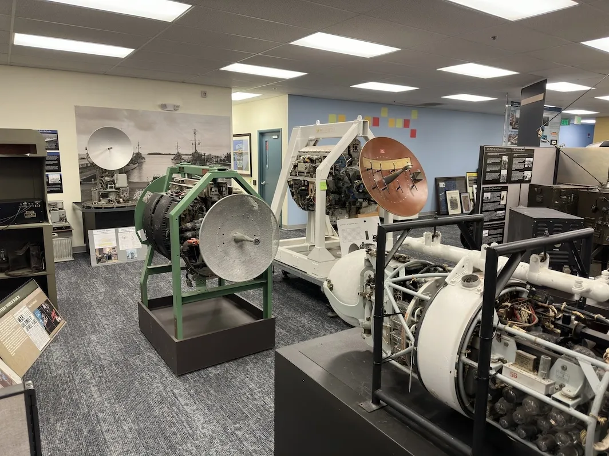
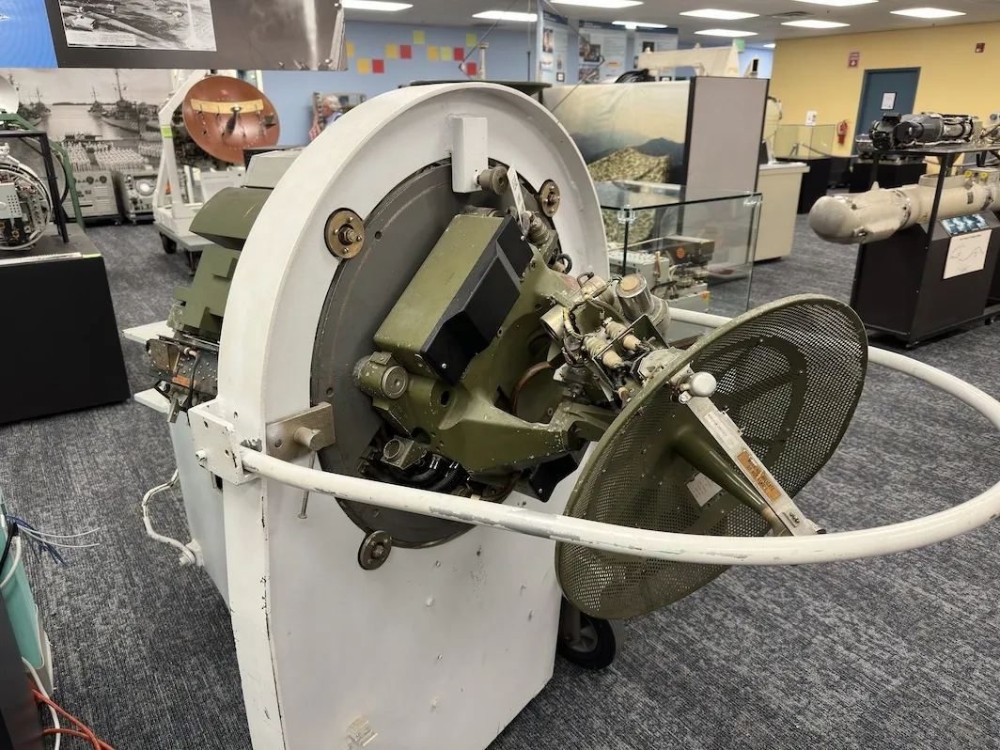
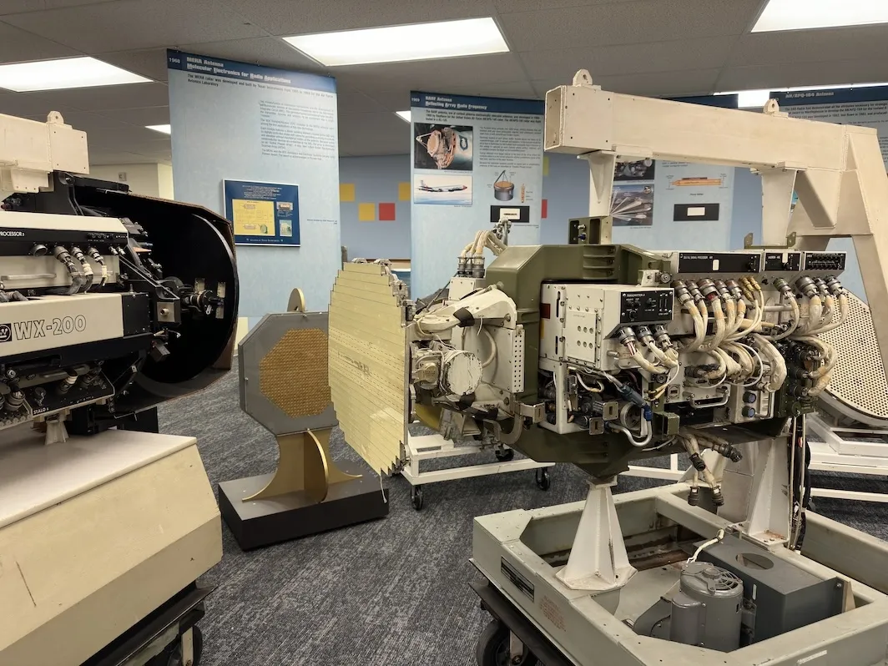

Checking Out a New Museum
Yesterday, I went back down to the System Source Museum in Baltimore Maryland1. I already have a post about that place. But, something new was opening up there.
National Electronics Museum
The National Electronics Museum was moving into some of the extra space at System Source. It wan’t open yet, but System Source was having an open house, so I got take a peek.
They mostly had old radio equipment, and a whole lot of radar systems. I known very little about radar. So, I’m going to have to drag my radar nerd friend down from Colorado.



Full res images can be found on my Flickr
-
Bal’mer Mer’lin ↩︎